1과목: 수처리공정
1. 폴리염화알루미늄 응집제에 관한 설명으로 옳지 않은 것은?
2. 고속응집 침전지의 효율적인 관리 방안으로 옳은 것은?
3. 정수장에서 횡류식 침전지로 유입되는 응집플록의 침강속도와 입자수 분포가 아래와 같다. 표면부하율이 1 m/hr일 때 입자의 제거효율은 몇 %인가?
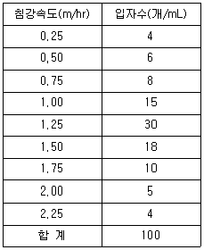
4. 정수처리 급속여과지의 세척에 관한 설명으로 옳지 않은 것은?
5. 정수장 급속여과지에 관한 설명으로 옳은 것은?
6. 정수장 급속여과지의 하부집수장치의 기능에 관한 설명으로 옳지 않은 것은?
7. 머드 볼(mud ball)에 관한 설명으로 옳은 것은?
8. 급속여과지 역세척에 관한 설명으로 옳은 것은?
9. 정수과정에서의 미생물 제어에 관한 설명으로 옳지 않은 것은?
10. 소독 부산물로 옳지 않은 것은?
11. 다음과 같은 특성을 갖는 처리제는?
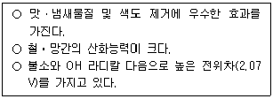
12. 염소소독 효과에 관한 설명으로 옳은 것을 모두 고른 것은?
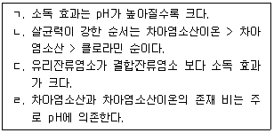
13. 중간염소처리에 관한 설명으로 옳지 않은 것은?
14. 염소유효성분이 거의 100% 이므로 저장용량이 적어도 되며 품질이 안정되어 있는 소독제는?
15. 역삼투막을 이용한 해수담수화시설의 배출수 처리에 관한 설명으로 옳은 것은?
16. 정수장 농축조에서 유입슬러지량이 25 m3/day, 농축슬러지량이 1 m3/day이고 농축시험에서 구한 등속침강구간에서의 계면침강속도가 2 cm/hr 일 때 청징조건을 만족하는 면적(m2)은?
17. 혐기성 상태 혹은 부식에 의해 발생할 수 있는 냄새의 원인 물질을 모두 고른 것은?
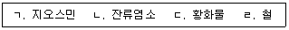
18. 분말활성탄처리의 단점으로 옳지 않은 것은?
19. 정수장 오존처리공정 설계 시 고려사항으로 옳지 않은 것은?
20. 하루 40,000 m3의 원수를 1.0 m/day의 속도로 막여과 처리한 후 10 %를 역세에 사용하고 90%를 최종 생산수로 얻는 경우 필요한 분리막의 면적(m2)은? (단, 역세는 20분 여과 후에 2분간 실시한다.)
2과목: 수질분석 및 관리
21. 다음의 내용을 옳게 나타낸 것은?
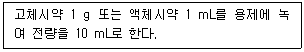
22. 먹는물수질공정시험기준에서 수질시험결과의 소숫점 이하를 n자리까지 하는 수치 정리를 옳게 기술한 것을 모두 고른 것은?
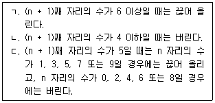
23. 시안표준원액 100 mL를 비커에 넣고 수산화나트륨용액(1.0 M) 0.5 mL를 넣은 후 ρ-디메틸아미노벤잘로데닌 0.5 mL 지시약을 가한 다음 용액의 색이 황색에서 적색으로 될 때까지 질산은용액(0.1 M)으로 적정하였을 때 20 mL가 소비되었다. 이 용액에 함유된 시안(mg/mL)은? [단, 질산은용액(0.1 M)의 농도계수(f)는 1로 한다.]
24. 수질오염공정시험기준에서 용존산소 시료의 보관방법에 관한 설명이다. ( )에 들어갈 내용을 순서대로 나열한 것은?
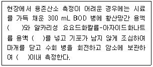
25. 수질오염공정시험기준상 하천수에 존재하는 6가 크롬을 분석하는 방법이 아닌 것은?
26. 먹는물 수질감시항목 운영 등에 관한 고시에서 휘발성유기화합물-퍼지ㆍ트랩-기체크로마토그래피를 사용하여 분석할 수 없는 항목은?
27. 수도법령상 정수처리한 물의 불활성화비가 기준에 적합한지를 확인하기 위한 검사항목, 주기 및 방법으로 옳지 않은 것은?
28. 일반정수처리방법으로는 완전히 제거되지 않는 수돗물의 맛ㆍ냄새 유발물질, 미량유기오염물질, 내염소성 병원성 미생물 등을 제거하기 위한 고도정수처리시설의 도입 및 평가에 필요한 하천수 대상 수질검사 항목으로 옳지 않은 것은?
29. 염소요구량을 구하기 위하여 물속에 존재하는 잔류염소-비색법으로 측정할 때 사용되는 잔류염소의 표준비색원액 시약은?
30. 각종 소독제를 이용하여 5 ℃일 때에 E. coli를 99 % 불활성화하기 위한 소독능(CㆍT값)으로 옳지 않은 것은?
31. 수질시험 항목별 시료채취 용기와 보존을 위한 pH 조정값으로 옳지 않은 것은?
32. 수질오염공정시험기준에서 자외선/가시선 분광법을 이용한 측정 항목, 방법 및 파장의 연결이 옳은 것을 모두 고른 것은?
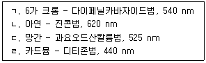
33. 먹는물 수질기준 값에 근접한 수돗물의 총트리할로메탄을 관리하기 위한 수질관리방안으로 옳지 않은 것은?
34. 물속의 유기인계 농약성분을 측정할 때 사용하는 표준물첨가법에 의한 검정곡선 작성을 설명한 것으로 옳은 것은?
35. 상수원에 남조류가 대발생했을 경우, 정수장에 유입농도가 높아질 가능성이 있는 항목을 모두 고른 것은?
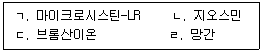
36. 수도법령상 수도용 자재와 제품에 대한 위생안전기준 항목으로 옳지 않은 것은?
37. 냄새 역치값(TON)을 구하는 실험에서 다음과 같은 결과를 얻었다. 이 경우 TON은?
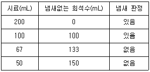
38. 수도법령상 수도사업자가 스스로 정수장에 대한 기술진단을 하는 경우에 갖추어야 할 장비와 그 규격으로 옳지 않은 것은?
39. 수도법령상 일반수도사업자가 주민공지를 하는 방법이 아닌 것은?
40. 먹는물관리법령상 먹는물, 샘물 및 염지하수(이하 “먹는물 등”이라 함)의 수질관리로 옳지 않은 것은?
3과목: 설비운영(기계·장치 또는 계측기 등)
41. 경사판등의 침전지에서 상향류식 경사판을 설치 할 경우 기준으로 옳은 것은?
42. 정속여과의 제어가 아닌 것은?
43. 정수장 입상활성탄 여과지의 공상접촉시간(EBCT)은 10분인데, 15분으로 증대하기 위해 필요한 추가 활성탄량(m3)은? (단, 지당 평균유입 유량은 36,000 m3/day이다.)
44. 배오존 처리에 관한 설명으로 옳지 않은 것은?
45. 응집약품의 저장 및 검수설비에 관한 설명으로 옳지 않은 것은?
46. 펌프가압방식의 막여과 유속에 관한 설명이다. ( )에 들어갈 숫자로 옳은 것은?
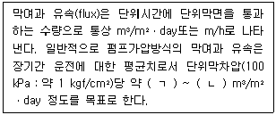
47. 정수장의 수전설비 중 3상 차단기의 정격전압이 7.2 kV, 정격차단전류가 40 kA일 때 차단기의 정격차단용량은 약 몇 MVA 인가?
48. 정수장에 설치된 변압기의 △-Y 결선방식에서 1차측과 2차측의 위상차는?
49. 다음에서 설명하는 전기설비는 무엇인가?
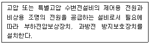
50. 정수장의 수ㆍ변전설비 중 역률을 개선하는 장치는?
51. 자동제어계의 응답곡선 중 제어성이 가장 좋은 것은?
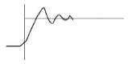
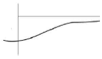
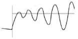
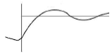
52. 정수 공정별 수질계측기의 기본설치항목과 연결이 옳지 않은 것은?
53. 감시조작설비에 관한 설명으로 옳지 않은 것은?
54. 밸브의 공기압식 구동장치가 아닌 것은?
55. 계측제어용 기기의 선정 및 설치 시 유의할 점으로 옳지 않은 것은?
56. 산업안전보건법령상 안전ㆍ보건표지의 색채와 용도의 연결이 올바른 것은?
57. 펌프운전 중 경보 발생 조건으로 옳지 않은 것은?
58. 다음에서 설명하고 있는 수위계는?
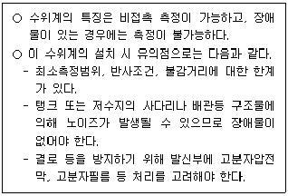
59. 오존처리시설의 안전에 관한 내용으로 옳지 않은 것은?
60. 지락사고시 영상전류를 검출하는 장치는?
4과목: 정수시설 수리학
61. 모세관 현상(capillary action)의 상승고에 관한 설명으로 옳지 않은 것은?
62. 다음 중 무차원 수를 모두 고른 것은?
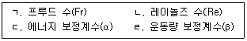
63. 신도시의 상수관망을 설계하려고 한다. 저지대에는 최대 500 kPa의 수압을 견딜 수 있는 상수관이 요구된다. 내경 400 mm인 원관을 이용하여 상수관망을 설계하려고 할 때, 관의 허용인장응력이 50 MPa이면 관의 최소두께(mm)는?
64. 수심 2 m의 수로에 차수벽(높이 2 m, 폭 1 m)을 수직으로 설치하려고 한다. 차수벽을 지탱하는 지지대를 차수벽이 받는 수압의 중심에 두려고 할 때, 지지대는 수심 약 몇 m에 설치해야 하는가?
65. 직경 4 cm인 노즐에서 물이 5 m/sec의 속도로 벽에 수직으로 분출될 때, 벽이 받는 힘(N)은 약 얼마인가? (단, 물의 밀도는 1,000 kg/m3이다.)
66. 다음 중 베르누이(Bernoulli) 정리를 응용한 것은?
67. 수평으로 놓여있는 원관에서 층류의 유속분포가
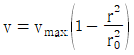
으로 주어졌을 때, 원관 내 평균유속 vm과 최대유속 vmax과의 관계로 옳은 것은? (단, r은 관 중심에서의 거리, r0는 반경이다.)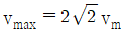
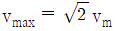
68. Manning의 평균유속공식에서 조도계수(n), Chezy 유속계수(C)와 동수반경(R)의 관계로 옳은 것은?
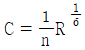
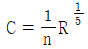
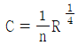
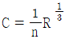
69. 에너지선과 동수경사선(hydraulic grade line)의 관계에서, 동수경사선에 관한설명으로 옳은 것은?
70. 직경 200 mm의 원관에 물이 흐를 때, 길이 100 m를 유하하는 동안 발생한 손실수두가 10 m이다. Manning 공식을 이용하여 구한 유량(m3/sec)은 약 얼마인가? (단, 조도계수는 0.012이다.)
71. 병렬관수로가 분기점 A부터 합류점 B까지, 두 개의 관로(길이와 마찰계수는 같고, 관경이 서로 다른 관)로 구성되어 있다. 이 때, 관로 2의 관경이 관로 1의 관경보다 2배가 크다면, 관로 2에 흐르는 유속은 관로 1에 흐르는 유속의 몇 배인가?
72. Stokes의 법칙이 적용되는 정수시설은?
73. 하루에 4,000 m3의 물을 침전처리하기 위하여 장방형 침전지(폭 10 m, 길이 40 m, 유효깊이 3.5 m)를 설계하였다. 이 장방형 침전지의 표면부하율(mm/min)은 약 얼마인가?
74. 약품을 효율적으로 주입하기 위하여 약품혼화지를 설치하고자 한다. 약품혼화지에 설치할 교반기의 요구동력에 관한 설명으로 옳지 않은 것은?
75. 펌프의 축이 600 rpm으로 회전하며 157 kW의 동력을 전달하고 있다. 이 펌프의 회전력(Torque)(kW)은 약 얼마인가? (단, 펌프의 효율은 고려하지 않는다.)
76. 유효양정 16 m, 유량 2.56 m3/min로 물을 양수하는데 필요한 원심펌프의 회전수(rpm)는? (단, 비속도(Ns)는 200이다.)
77. 유효낙차가 51 m이고 유량이 100 m3/sec인 흐름에서 30,000 kW의 출력을 얻고자 할 때 요구되는 수차의 효율(%)은?
78. 펌프에서의 공동현상(cavitation)을 방지하기 위한 방법으로 옳지 않은 것은?
79. 수로의 유속을 측정하기 위해 피토관(Pitot tube)을 수심 20 cm 위치에 설치하였더니, 피토관 내의 수위가 수로의 수면보다 10 cm 위에 위치하였다. 이 때 수로의 유속(m/sec)은 약 얼마인가? (단, 수로단면의 유속은 평균유속으로 일정하다고 가정한다.)
80. 수위차가 5 m이고 거리가 2.5 km 떨어져 있는 두 수조가 있다. 관로를 설치하여 1.5 m3/sec의 유량으로 물을 이송시킬 수 있는 관의 내경(m)은 약 얼마인가? (단, 마찰손실계수 f는 0.026이다.)